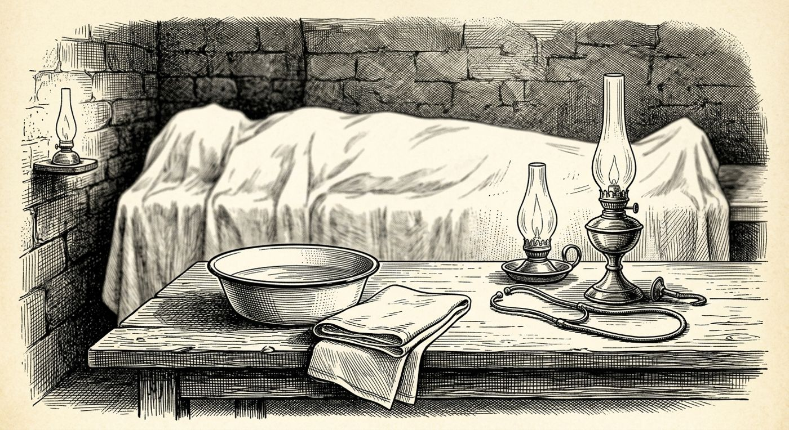

5 de diciembre
La autopsia improvisada
Libro · págs. 22-25
Audio del día
Transcripción
«Le digo que fue el corazón... Lombard sufría arritmias y tomaba digoxina. Una dosis equivocada con el alcohol y el fallo cardíaco es inevitable. ¿Que falta una ampolla en mi maletín? ¡Una imprudencia en el viaje, nada más! No me mire así, detective. Examine el cadáver si no me cree. Compruebe los labios, la piel, las pupilas... Pero le aseguro que la medicina no miente.»

Intenta resolverlo primero. Abre solo lo que necesites, en este orden.
1Pista sutil
No busques la toxina que explique solo un síntoma. Descarta todas las que requieran síntomas que NO están presentes en el cadáver (como visión amarillenta, pupilas dilatadas o diarrea).
2Comprobación parcial
La Digoxina (1) queda descartada porque no da entumecimiento ni sudor frío (H1, H2); la ficha H5 tampoco recoge visión amarillenta. La Atropina (3) se descarta por requerir pupilas dilatadas y piel seca.
3Pista fuerte
Los síntomas observados son: entumecimiento de labios y lengua (✔), sudor frío (✔), y ✘ en todos los demás. Solo una fila de la tabla tiene exactamente ✔ en esas dos columnas y ✘ en el resto.
4Solución oficialSpoiler si no lo has intentado
Síntomas observados: Entumecimiento de labios/lengua (✔) y sudor frío (✔). Todos los demás síntomas son negativos (✘).
Toxina compatible: Aconitina (extraída del acónito).
Descartadas: Digoxina (1), Atropina (3), Coniina (4) y Ricina (5).
Para el desenlace de la historia, vuelve al libro: la sección de soluciones está al final.